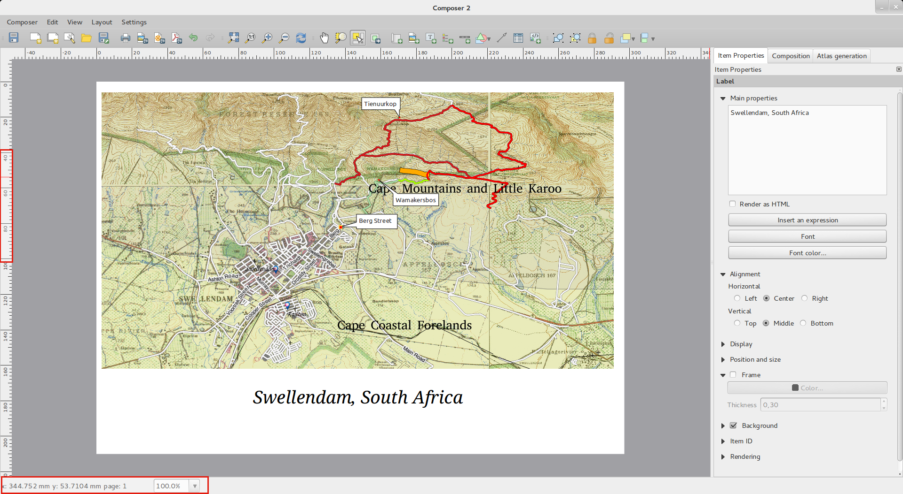
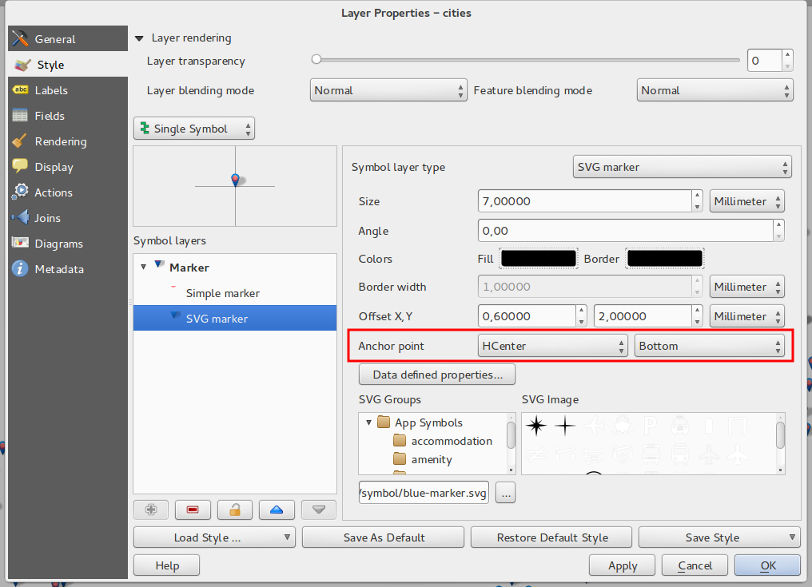
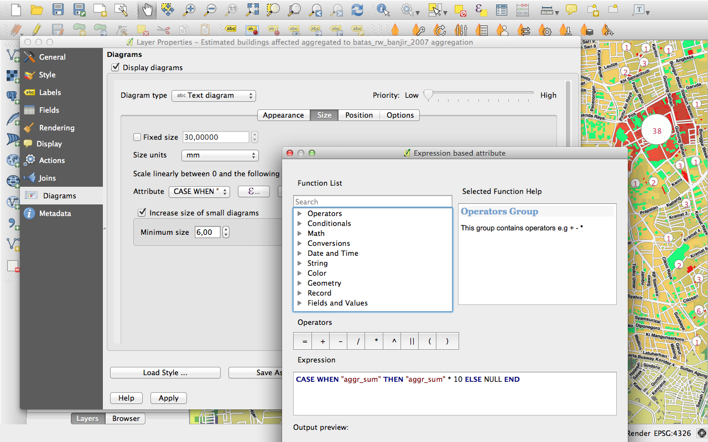

Log met wijzigingen voor QGIS 2.2¶
Log met wijzigingen voor de volgende uitgave van QGIS 2.2.0. De nadruk voor deze uitgave ligt meer op het oppoetsen en de uitvoering - we hebben vele nieuwe mogelijkheden, tweaks en verbeteringen toegevoegd om de gebruikersinterface meer consistent te maken en er professioneler uit te laten zien (en hopelijk eenvoudiger te gebruiken). Aan de Printvormgeving (gebruikt voor het maken van afdrukklare kaarten) is heel vele werk verricht om het een meer bruikbaar platform voor het maken van fantastische cartografische uitvoer te maken.
Wanneer aan software nieuwe mogelijkheden worden toegevoegd introduceren die de mogelijkheid tot het ontstaan van nieuwe problemen - als u in deze uitgave nieuwe problemen tegenkomt, vul dan een ticket in op de QGIS Bug Tracker.
We willen de ontwikkelaars, schrijvers van documentatie, testers en alle andere vele mensen bedanken die vrijwillig hun tijd en inspanningen bijdragen (of mensen ondersteunen om dat te doen).
From the QGIS community we hope you enjoy this release! If you wish to donate time, money or otherwise get involved in making QGIS more awesome, please wander along to qgis.org and lend a hand!
Tenslotte willen we onze officiële sponsoren bedanken voor de onschatbare financiële ondersteuning die zij aan dit project verlenen:
- GOUDEN sponsor: Asia Air Survey, Japan
- ZILVEREN sponsor: G.A.I.A. mbH, Duitsland
- ZILVEREN sponsor: Staat Vorarlberg, Oostenrijk
- BRONZEN sponsor: www.molitec.it, Italië
- BRONZEN sponsor: www.argusoft.de, Germany
A current list of donors who have made financial contributions large and small to the project can be seen on our donors list.
If you would like to make a donation or sponsor our project, please visit our sponsorship page for details. QGIS is Free software and you are under no obligation to do so. Sponsoring QGIS helps us to fund our six monthly developer meetings, maintain project infrastructure and fund bug fixing efforts.
- Opties voor toepassing en project
- Gegevensproviders
- Digitaliseren
- Algemeen
- Printvormgeving
- Mogelijkheid: Verbeteringen aan Zebra-kaartranden
- Mogelijkheid: Ondersteuning voor roteren van elementen
- Mogelijkheid: Schaal voor Printvormgeving toegevoegd en verbeteringen aan liniaal
- Mogelijkheid: World-bestand genereren
- Mogelijkheid: Werken met meerdere items
- Mogelijkheid: Verbeteringen aan Atlas
- Mogelijkheid: Verbeterd selecteren voor item
- Mogelijkheid: Betere navigatie door lay-outs
- Mogelijkheid: Verbeterde stijl voor pagina’s en vormen
- QGIS-server
- Symbologie
- Mogelijkheid: Ondersteuning voor vulling van kleurverloop
- Mogelijkheid: Ondersteuning voor labels in lagen met palet
- Mogelijkheid: Kleurovergangen kunnen worden omgedraaid
- Mogelijkheid: kopiëren en plakken in op regel gebaseerde renderer
- Mogelijkheid: Direct generaliseren van object
- Mogelijkheid: Ankerpunten kunnen worden ingesteld voor markeringslagen
- Mogelijkheid: Thematische kaarten gebaseerd op expressies
- Mogelijkheid: Ondersteuning voor expressies in symbooldiagrammen voor grootte en attributen
- Mogelijkheid: Regel Else in Op regel gebaseerde renderer
- Mogelijkheid: Ondersteuning voor stroken binnen polygonen
- Gebruikers-interface
Opties voor toepassing en project¶
Mogelijkheid: Ondersteuning voor maateenheden in nautische mijlen¶
Zeevarenden kunnen nu afstanden meten in zeemijlen. Gebruik het paneel om dit te in te schakelen.

Gegevensproviders¶
Mogelijkheid; Ondersteuning voor één tot veel-relaties¶
Deze uitgave ondersteunt de mogelijkheid om relaties 1:n te definiëren. De relaties worden vastgelegd in het dialoogvenster Projectinstellingen. Wanneer een eigenschap is aangemaakt voor een laag, dan zal het objectformulier (bijv. bij identificeren van een object en openen van het formulier ervan) een nieuw item bevatten waarmee de gerelateerde objecten zichtbaar worden. Dit biedt een krachtige manier waarmee bijvoorbeeld de onderhoudshistorie van een leiding of een wegdeel kan worden vastgelegd. Lees hier meer over de ondersteuning voor relaties 1:n.

Mogelijkheid: Gereedschap DXF exporteren¶
Een nieuw gereedschap voor het exporteren van DXF is toegevoegd onder het menu Project.

Mogelijkheid: Plakken als nieuwe vectorlaag¶
Een veel voorkomend onderdeel in een GIS is om na het maken van een sub-selectie deze op te slaan in een nieuwe laag. In QGIS kon je al Selectie opslaan als kiezen, om een selectie uit uw laag op te slaan als laag. en nu heeft u de functionaliteit om ene nieuwe bestands- of geheugenlaag te maken van wat op het klembord is opgeslagen. Selecteer eenvoudigweg enkele objecten, kopieer ze naar uw klembord en doe dan Bewerken --> Objecten plakken als en kies ofwel ‘Nieuwe vectorlaag’ of ‘Nieuwe geheugenlaag’. Het is nu ook mogelijk geworden om objecten die als Well Known Tekst (WKT) objecten in het klembord zijn opgeslagen, vanuit een andere toepassing, deze nu eenvoudig als een nieuwe laag in QGIS kunnen worden opgeslagen.

Mogelijkheid: Afbeelding van WMS-legenda weergeven in inhoudsopgave en printvormgeving¶
Voor QGIS 2.2 kon de WMS gegevensprovider geen symbool voor de legenda tonen in de Lagenlijst. Zo kon ook binnen de printvormgeving deze niet worden getoond in de legenda van de printvormgeving. In QGIS 2.2 zijn deze beide problemen opgelost.
klikken op de legenda van de laag zal een frame openen met de legenda in volledige resolutie. De legenda zal contextuele informatie weergeven gebaseerd op uw huidige schaal. De legenda voor WMS zal alleen worden weergegeven als de server voor WMS de mogelijkheid GetLegendGraphic heeft. De resolutie van de legenda kan worden aangepast door opties in Kaartvenster & legenda.

Digitaliseren¶
Mogelijkheid: Gereedschap voor digitaliseren Ring vullen¶
Dit nieuwe gereedschap wordt gebruikt om gaten in polygonen te maken en deze vervolgens automatisch te vullen met een nieuw object. Als u de Ctrl-toets wordt ingedrukt gehouden tijdens het afronden van het invoeren van het object, zullen de attribuutwaarden worden overgenomen van het ouderobject.

Algemeen¶
Mogelijkheid: Recente expressies opslaan¶
De Expressiebouwer zal nu de laatste 20 gebruikte reguliere expressies onthouden.

Mogelijkheid: WKT plakken vanaf klembord¶
QGIS kan nu een object in de indeling WKT vanaf het klembord plakken en een nieuw object maken. Kopieer eenvoudigweg enige WKT en plak die in een bewerkbare laag. U kunt ook een nieuwe laag maken door Bewerken --> Plakken als --> Nieuwe geheugenlaag te selecteren.
Printvormgeving¶
Mogelijkheid: Verbeteringen aan Zebra-kaartranden¶
U kunt nu de kleuren van de randen Zebra instellen in het kaartelement van Printvormgeving.

Mogelijkheid: Ondersteuning voor roteren van elementen¶
Elk type element in de Printvormgeving kan nu worden geroteerd, inclusief de schaalbalk, tabellen en legenda. U kunt bijvoorbeeld een label in de kaart zo roteren dat deze beter op de kaart past (zoals geïllustreerd). Het aanpassen van de grootte van geroteerde elementen is ook verbeterd.

Mogelijkheid: Schaal voor Printvormgeving toegevoegd en verbeteringen aan liniaal¶
De weergave van de linialen zijn verbeterd door de logica voor de schaal aan te passen, door het invoegen van kleinere liniaalstreepjes en door de maattekst te draaien. Er is ook een nieuwe functie om de linialen te verbergen/te tonen. U kunt nu snel inzoomen naar de paginaschaal 100% met behulp van het nieuwe gereedschap Zoom naar 100% op de werkbalk. In Printvormgeving kan men de kaart snel verschalen met de keuzelijst voor de schaal in de statusbalk. Daarnaast is een nieuwe indicator toegevoegd waarmee u exact uw positie van de cursor kunt bepalen. De knoppen Afsluiten en Help zijn verwijderd van de onderkant van het venster van Printomgeving om de maximale hoeveelheid schermruimte te creëren om aan de kaart te werken.

Mogelijkheid: World-bestand genereren¶
Binnen Printvormgeving kunt u nu kaarten met geo-verwijzingen maken! Zorg ervoor dat u het juiste kaartelement hebt geselecteerd op de tab Lay-out en exporteer vervolgens de kaart in de indeling PNG. Een wereldbestand met geo-verwijzingen wordt dan eveneens aangemaakt, zodat de kaart vervolgens weer in QGIS kan worden ingeladen als een rasterlaag.

Mogelijkheid: Werken met meerdere items¶
Ondersteuning is toegevoegd voor het verplaatsen en wijzigen van de grootte voor meerdere items tegelijkertijd. U kunt nu Shift ingedrukt houden bij het wijzigen om de verhoudingen van het item te behouden, of Ctrl ingedrukt houden om vanuit het centrum van het item de grootte te wijzigen. Sneltoetsen zijn ook van toepassing bij het verplaatsen van items, dus het ingedrukt houden van Shift bij het verplaatsen van een item beperkt de verplaatsing tot een horizontale of verticale verplaatsing, en het ingedrukt houden van Ctrl schakelt het vangen van het item tijdelijk uit. U kunt ook Shift ingedrukt houden bij het drukken op een pijltoets om alle geselecteerde items met een grotere stap te vergroten.
Mogelijkheid: Verbeteringen aan Atlas¶
U kunt nu de individuele pagina’s van de kaartatlas bekijken die zullen worden gegenereerd in de Printvormgeving. In de modus Atlas voorbeeld kunt u de huidige pagina afdrukken zonder de gehele atlas af te drukken. U kunt ook de inhoud van de kaart verfijnen of elk object daarin schalen tijdens het bekijken van de pagina van de atlas. Instellingen voor Atlaskaarten zijn verplaatst van het paneel Atlas naar het paneel Eigenschappen, dus kunnen nu meer dan één kaart worden beheert bij het genereren van een atlas. Er is een nieuwe optie om automatisch een overzichtskaart te centreren, wat handig is bij het maken van op atlassen gebaseerde kaarten. Meer contextinformatie is nu ook beschikbaar zodat u uw symbologie kunt aanpassen, gebaseerd of het object het huidige object in de atlas is of niet. Bekijk dit artikel voor meer info.

Mogelijkheid: Verbeterd selecteren voor item¶
U kunt nu meer dan één item selecteren door te klikken en er een vak omheen te slepen om meerdere items te selecteren, en er zijn sneltoetsen voor het toevoegen aan een selectie (houd Shift ingedrukt tijdens het slepen), verwijderen uit een selectie (houd Ctrl ingedrukt tijdens het slepen) en schakelen naar de selectiemodus “binnen” (houd Alt ingedrukt tijdens het slepen). Shift-klikken op een reeds geselecteerd item zal het uit de selectie verwijderen. Er zijn ook sneltoetsen en menu-items voor het selecteren van alle items, een selectie op te heffen en een selectie om te draaien. Het is nu ook mogelijk om items te selecteren die zijn verborgen onder andere items door te Ctrl-klikken op een item, of door “Selecteer volgende/vorige item” in het nieuwe menu Bewerken in de Printvormgeving.
Mogelijkheid: Verbeterde stijl voor pagina’s en vormen¶
U kunt nu de stijl van de achtergrond van de lay-out beheren me behulp van het volledige bereik van de opties voor symbologie van QGIS. Het is nu mogelijk om lay-outs met een transparante achtergrond te exporteren (of semi-transparante). Vorm-items (rechthoeken, driehoeken en ellipsen) kunnen ook worden opgemaakt met dezelfde opties als voor lagen voor polygonen. U kunt zelfs de achtergrond van de pagina of van vormen opmaken met behulp van data-gedefinieerde instellingen gebaseerd op het huidige object van de Atlas! Er is ook een nieuwe optie voor het afronden van de hoeken van rechthoekige vormen.
QGIS-server¶
Mogelijkheid: Ondersteuning voor WCS toegevoegd aan QGIS-server¶
QGIS Server ondersteunde al verschillende standaarden, inclusief Web Map Service (WMS versie 1.3.0 en 1.1.1), Web Feature Service (WFS versie 1.0.0) en Web Feature Service met Transaction (WFS-T). met deze nieuwe uitgave van QGIS, kunt u nu rasterlagen op de server plaatsen met behulp van de standaard Web Coverage Service (WCS versie 1.0.0).

Symbologie¶
Mogelijkheid: Ondersteuning voor vulling van kleurverloop¶
De nieuwe mogelijkheid voor vulling van kleurverloop laat u betere cartografie maken dan ooit tevoren. De mogelijkheid heeft vele opties die grote flexibiliteit verschaffen in hoe u kleurverlopen op uw objecten toepast. Deze bevatten:
- Tweekleurige of op kleurenbalk gebaseerde vullingen
- Kaart- of object-gebaseerde herkomst voor uw kleurverlopen
- Kleurverlopen die van origine uit het centrum van uw object komen
- Conische, lineaire en radiale typen kleurverlopen
- Data-gedefinieerde opties (om een expressie of tabelkolom te gebruiken) voor alle eigenschappen van kleurverloop
Lees hier meer over hoe kleurverlopen te gebruiken.

Mogelijkheid: Ondersteuning voor labels in lagen met palet¶
Rasters die een vast kleurpalet gebruiken (bijvoorbeeld een kaart voor landgebruik) kunnen nu een categorie labels krijgen toegewezen dat in de legenda van de kaart wordt weergegeven en in de legenda van de Printvormgeving.

Mogelijkheid: Kleurovergangen kunnen worden omgedraaid¶
Een nieuwe optie is toegevoegd aan dialoogvensters voor symbologie die kleurenbalken behandelen om u toe te staan de kleurenbalk om te draaien als die gemaakt is.

Mogelijkheid: kopiëren en plakken in op regel gebaseerde renderer¶
In de Op regel gebaseerde renderer kunt u nu met rechts op een regel klikken en dan de regel kopiëren en plakken als een neiuwe regel.

Mogelijkheid: Direct generaliseren van object¶
QGIS 2.2 introduceert ondersteuning voor directe generalisatie van objecten. Dit kan de tijd voor het renderen verbeteren bij het tekenen van vele complexe objecten op kleine schalen. Deze mogelijkheid kan in de instellingen voor de laag worden in- of uitgeschakeld. Er is ook een nieuwe globale instelling die generalisatie standaard inschakelt voor nieuw toegevoegde lagen. Opmerking: Generalisatie van objecten kan in sommige gevallen artefacten in uw gerenderde uitvoer veroorzaken. Dit kunnen versplinteringen zijn tussen polygonen en inaccuraat renderen bij het gebruiken van op verplaatsing gebaseerde symboollagen.

Mogelijkheid: Ankerpunten kunnen worden ingesteld voor markeringslagen¶
Bij het definiëren van symbologie voor markeringslagen (bijv., een puntlaag die wordt gesymboliseerd met SVG-markeringen) kunt u nu specificeren welk gedeelte van de afbeelding zou moeten corresponderen met het ‘ankerpunt’. U kunt bijvoorbeeld aangeven dat de hoek linksonder van de afbeelding samen zou moeten vallen met de positie van het object. U kunt ook de data-gedefinieerde eigenschappen gebruiken om deze eigenschap in te stellen bij het renderen, gebaseerd op een attribuut in de gegevenstabel voor die laag (of een willekeurige expressie).

Mogelijkheid: Thematische kaarten gebaseerd op expressies¶
Thematische kaarten van Categorieën en Gradueel kunnen nu worden gemaakt met behulp van het resultaat van een expressie. In het dialoogvenster Eigenschappen voor vectorlagen, is de kiezer voor de attributen uitgebreid met een expressie bouwer U hoeft dus nu niet langer meer het attribuut voor de classificatie naar een nieuwe kolom in uw attributentabel weg te schrijven als u wilt dat het attribuut voor de classificatie een samenstelling is van meerdere velden of een formule van enige soort.

Mogelijkheid: Ondersteuning voor expressies in symbooldiagrammen voor grootte en attributen¶
U kunt nu een expressie gebruiken om de grootte en attributen te definiëren bij het gebruiken van de mogelijkheden voor diagrammen van QGIS. Voor meer info, bekijk het Pull Request hier Pull 1039

Mogelijkheid: Regel Else in Op regel gebaseerde renderer¶
De Op regel gebaseerde renderer ondersteunt nu een regel met ELSE die zal worden uitgevoerd als geen van de andere regels op dat niveau overeenkomt. Regels met Else kunnen worden genest, net als elke andere regel.
Een voorbeeld kan zijn:
type = 'water' (style grey)ELSE (style red)
Mogelijkheid: Ondersteuning voor stroken binnen polygonen¶
Ondersteuning is toegevoegd voor stroken van polygonen om te zijn beperkt tot het binnenste van de polygoon (zodat zij niet overvloeien in een naastgelegen polygoon).
Meer informatie over deze mogelijkheid kan worden gevonden in het tweede gedeelte van dit artikel.

Gebruikers-interface¶
Mogelijkheid: Verbeterde dialoogvensters Eigenschappen¶
Van alle dialoogvensters Eigenschappen zijn hun hoofdmenu’s bijgewerkt, zodat zij er netter uitzien, met een omgedraaid gekleurde zijbalk. Dit is puur cosmetisch maar zou het eenvoudiger moeten maken om te weten wat uw huidige context is in een dialoogvenster.

Mogelijkheid: Verbeteringen aan dialoogvenster Expressie¶
We hebben enkele aanpassingen gemaakt aan het dialoogvenster Expressie - gevorderde gebruikers kunnen nu de knoppen Operator verbergen. Er zijn nu ook afscheidingen tussen de functielijst en hulpgebieden voor functies, en tussen het gebied voor de expressie en de functielijst. Bekijk het originele pull request voor de details.

Mogelijkheid: Nieuwe bindingen voor toetsen¶
We hebben de sneltoetsen voor het toetsenbord in QGIS bijgewerkt om het uitvoeren van herhalende taken efficiënter te maken.
Ctrl-d: Verwijder geselecteerde lagen uit de inhoudsopgave>: Selecteer volgende knoop bij gebruiken van gereedschap Knooppunt<: Selecteer vorige knoop bij gebruiken gereedschap KnooppuntDeleteofBackspace- verwijder de geselecteerde objecten (u kunt deze acties ongedaan maken), of knopen bij gebruiken van gereedschap KnooppuntF5: Bijwerken van de kaart (in plaats van Ctrl-r)
Bekijk ook Issue 9094 en Pull Request 1010 voor meer details.